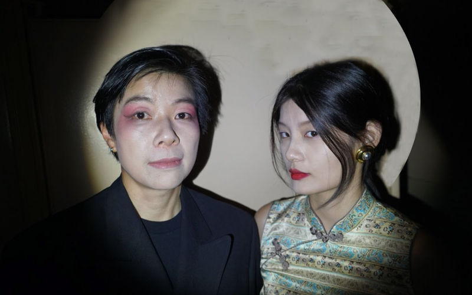

SIGns by Kim Anno
July 1 - September 15, 2023
An installation and two intersecting micro-operas, a glowing box and collapsing proscenium for an upside down world of ecologic disaster and shifting identities premiered at Dream Farm Commons and was awarded a Guggenheim in 2024 for next rendition!
Link to opera by Kim Anno and Anne Hege here
View the queering of the traditional Chinese opera DaManDao here
Visual artist Kim Anno built a multilayered installation and performative site, a glowing box, in the tall storefront windows of Dream Farm Commons in downtown Oakland. Crashing chandeliers, as visual tropes of failure and a collapsing theater proscenium meet luminous prints of lions on flowing fabric; video projections by Charlie Hague and Anno and embedded micro-opera sound fragments further activate the space. In this sculptural space two evenings of live performances premiered site specific participatory micro-operas, operas where audience both listen and make music. The first performance, created by Anno and composer Ann Hague, is an adaptation of Dante's purgatorio, where nature and wildness rejoice and the words of Sappho project a new context. A second evening of performance by Zijing Han and other artists in exile will queer a traditional Chinese opera. This opera was introduced by a project by artist Gao Ling, where food is metaphor, play, performance and sustenance to be eaten by audience.
